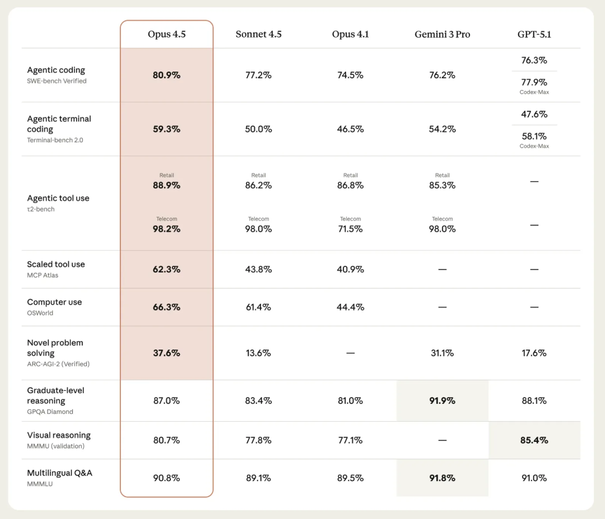
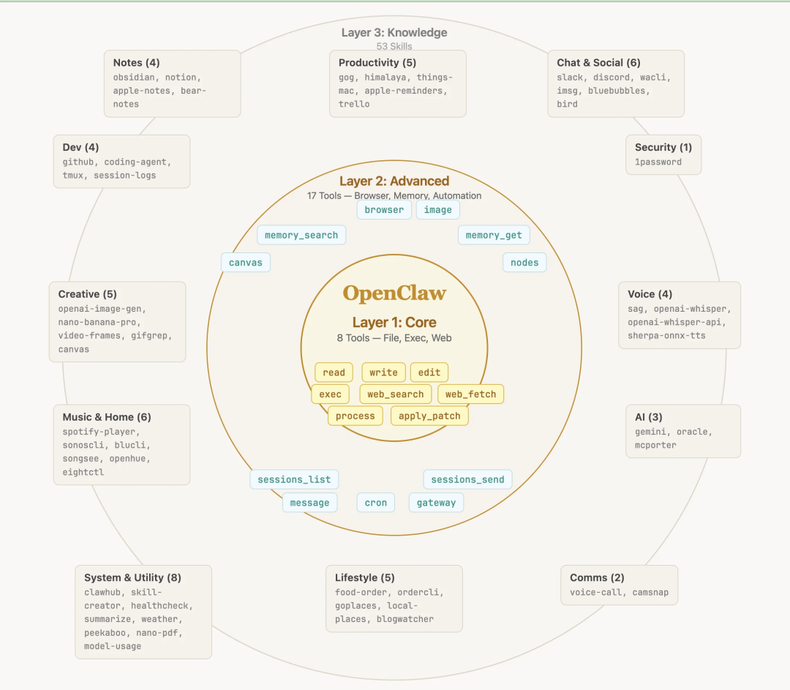
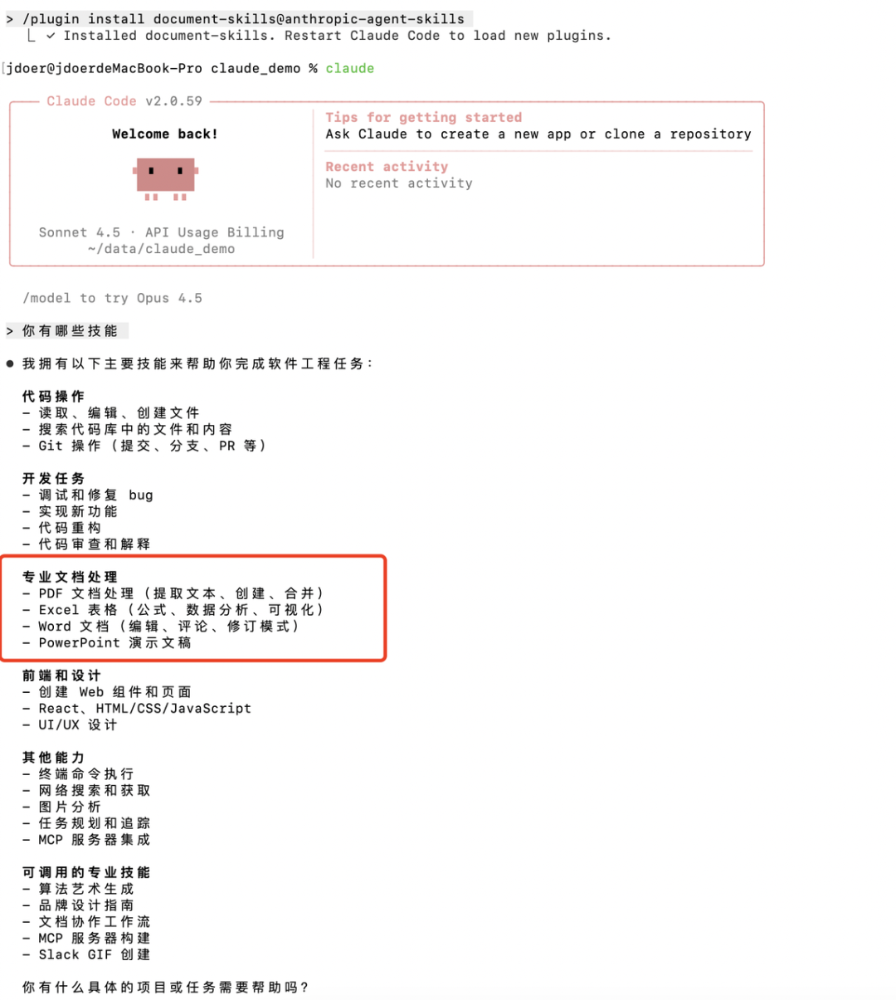
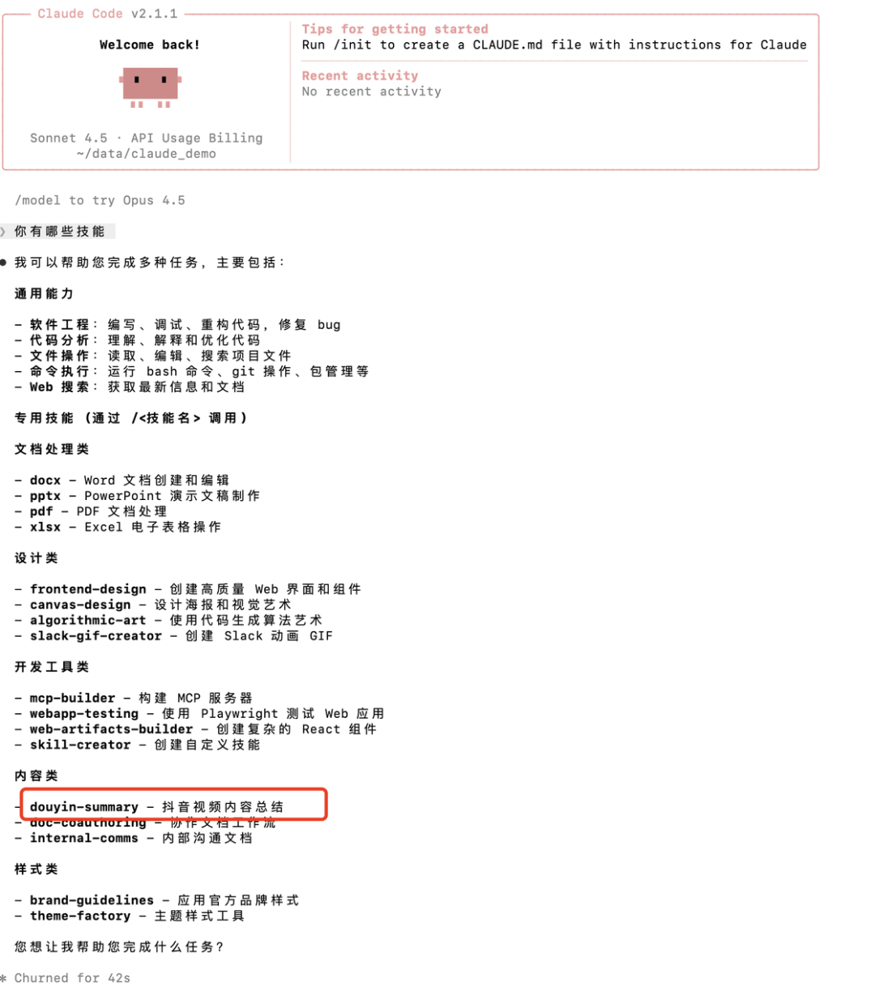
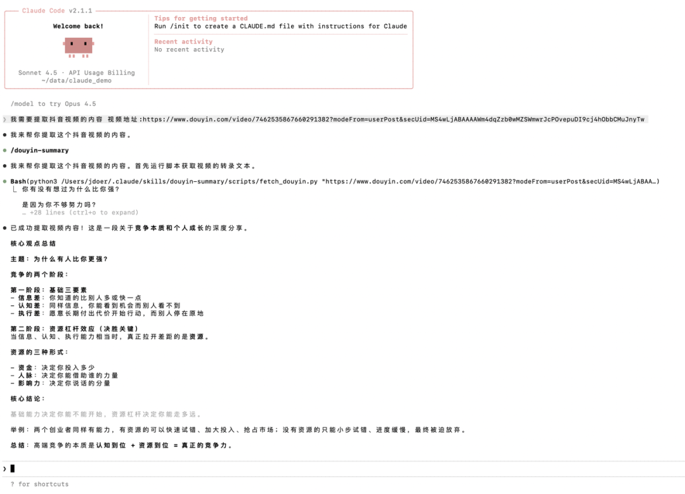
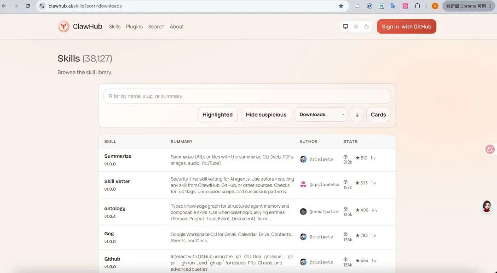
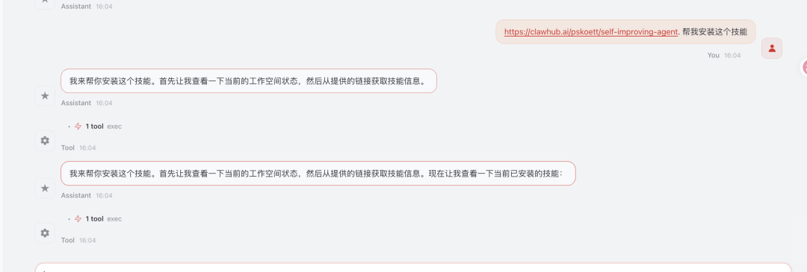
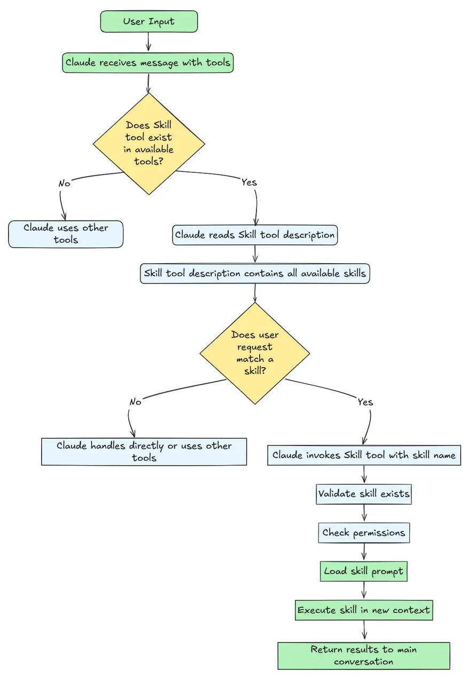
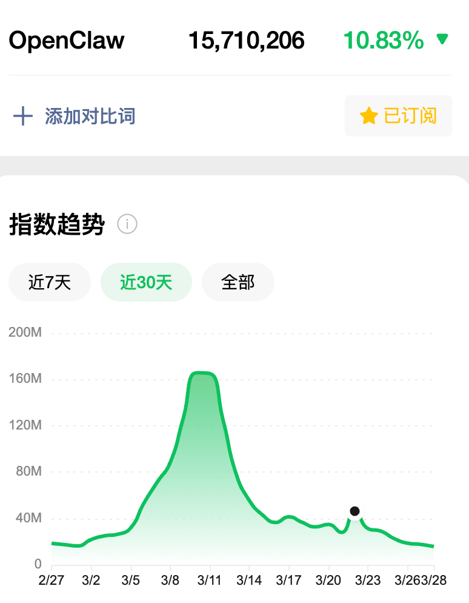

AI训练营9期，5月初开班，欢迎咨询
导读：本文约 1万字，非常简单，请放心阅读...
三月份，OpenClaw 小龙虾爆火，但火得有些不正常；
所以，我们这边做了一些研究，想从工程角度带着大家了解 OpenClaw 的本质，我们先后经过了 3 篇文章：
《万字：拆解 OpenClaw：从 Gateway、Memory、Skills、多 Agent 到 Runtime》
今天是最后一篇关于 OpenClaw 的架构拆解，也是我认为最重要的 Skills，我会尽量把他说清楚。
:::
如果你要问我 OpenClaw 的价值，我会说他再次证明了 Agent 这种产品模式会是未来，并且他展示了普通人大概会如何与 Agent 做交互，这个答案就是 Skills...
PS：OpenClaw 是当前 Agent 最典型的代表，去年是 Manus。
近一年，Agent 的进化速度尤其迅速，甚至可以说每次模型的迭代，都是为了 Agent 的某一能力而展开：

从能力本身来说，大家关心的无非一点： 上下文窗口有多长了，连带着会关心：记忆有多强大（这个跟模型关系不大）。
但做得深入一点的同学，会更关注 Tools 调用的稳定性。值得高兴的是，模型侧应该确实做了不少的训练动作，现阶段无论模型工具调用识别能力、还是工程手段都做了不少，最直接的成果就是 Skills：
Skills 很大程度上，助力了 Agent 从能聊天真正进化到能干活了
结合上一篇文章：《记忆系统》为 Agent 提供了背景知识，Skills，为 Agent 提供了工作方法论，他们加起来形成了一套稳定的工作架构。
这不只是我个人的实践结果，也是我阅读了很多文献的结论，比如来自 Claude Code 团队工程师 Thariq 的一篇深度复盘：《Skills工程化心法》
他给出了一个类似的定义：Skill不是一段更长的提示词，而是一个承载组织工作流的工程化单元。
一个完整的Skill，本质上是一个能力包，它长这样：
<skill-name>/
├── SKILL.md # 核心：告诉Agent“怎么做”的调度入口
├── references/ # 知识层：存放API文档、业务规则、历史案例
├── assets/ # 模板层：提供输出骨架、固定格式
├── scripts/ # 执行层：用代码搞定确定性任务
└── hooks/ # 约束与观测：记录调用、控制权限
大家要注意：Skills 是工程优化的结果，他并不能让 AI 变得更聪明，但他能把我们的最佳实践、流程和经验，以一种可维护、可复用的方式，留下来。
这是 OpenClaw 现在期望发生的事情；也是我一直在说的一句话：
Skill 的本质，不是提示词增强，而是 Workflow 的迁移
过去我们沉淀方法，靠的是文档、和老员工的口口相传。但这些东西都有一个共同问题：它们能被阅读，却不能被执行。
Skills 做的事情，就是把这些原本静态存在的方法，变成一种可以被 Agent 调用、被模型理解、被工具执行的能力单元，这对离职员工是挺烦的一件事...
这也是为什么我觉得，OpenClaw 真正有价值的，不是那些热闹的数字员工的叙事，而是它把一件事展示得很清楚：
未来普通人使用 Agent，未必是天天重写 Prompt，而更可能是围绕一组已经沉淀好的 Skills，去持续调用、组合

接下来，我们就从这个最朴素的痛点开始，聊聊 Skills 到底是什么，再逐次深入到 OpenClaw 的 Skills 相关实现：
提示词 → Skills
前面，我们说 Skills 是执行单元不是高级 Prompt，他们的差别有点像：一次性杯子和随身保温杯：

举个具体的例子。如果你想让AI帮你审查代码，用 Prompt 可能是这样：
请你检查这段代码，看看有没有安全问题，
特别是SQL注入、XSS这些常见的漏洞、敏感信息泄露、权限控制问题
对了，输出的时候要按严重程度排序，高危的放前面。"
用了之后，效果可能不错，用Skills的话，是这样的：
在一个pr-code-review的文件夹里，放一个SKILL.md文件，里面写着：
---
name: 代码安全审查
description: 当用户提交Pull Request时，自动检查新增代码的安全问题，或者用户主动要求安全检查
---
## 触发条件
- 用户提到"代码审查"或"安全检查"
- 输入中包含代码片段
- 上下文涉及Pull Request
## 检查范围
1. SQL注入漏洞
2. XSS跨站脚本
3. 敏感信息泄露
4. 权限控制问题
## 输出格式
- 高危（必须修复）
- 中危（建议修复）
- 低危（优化建议）
每个问题都要给出具体代码位置和修复建议。
这个看起来确实差不多，都在做安全检查，提示词的结构也几乎一样，但关键的差别，不在“写什么”，而在“怎么用”。
与 Prompt 不同的是，Skills 更为工程化了，Skill一旦写好，就被工具“托管”了。
工具会在合适的时候会自动调用它：当你提交Pull Request，或者主动发起安全检查时，对应 skill 就会被自动加载、执行。
并且，当前几乎每个基模/工具都支持了 Skills，这意味着，一个写好的 skill 可以在不同平台间复用，今天在 Claude Code 里用的代码审查 skill，明天换到 OpenClaw、Cursor 里，同样生效。
当每个人都可以把自己的最佳实践写成 skill，分享出来，一个良性循环就形成了：
用的人越多，积累的经验越多，Skills 的质量和覆盖面就越广。Skills 不再是个人本地的“小本本”，而是一个可共享、可迭代、可组合的能力生态
至此，大家就知道为什么 Skills 这个工程设计很夸张了吧，因为他的背后是各行各业可迁移的 Workflow，这是行业经验的精华。
Skills 三大核心价值

理解了什么是 Skills，我们再来看看它解决了什么问题，为什么 Skills 会出现的原因。
大模型在实际应用中面临着三大工程化痛点：
提示词臃肿、维护困难
一个复杂的任务，特别是多步工作流的任务，需要写几百甚至上千字的 Prompt。里面装满了各种要求、规则、格式说明、示例，Prompt 会变得又长又难读。
Prompt 越多，模型注意力就容易分散，就容易出现幻觉，程序执行的流程就越不容易稳定。
上下文窗口限制
就算你写了一个非常完美的 Prompt，它也要占用宝贵的上下文窗口。但当你需要处理多个复杂任务时，很快就会不够用。
能力复用困难
当你调教好了一个"代码重构专家"，明天同事也想用，怎么办？只能通过聊天发给他？这既不优雅，也很难保证执行效果一致。
Skills就是为解决这些问题而生的。
它的核心价值可以收敛成三点：
知识的沉淀与复用：反复使用的流程被固化为技能，避免重复造轮子 模块化架构：每个技能都是独立的，易于测试、维护和扩展 无限的可能性：通过组合不同技能，可以构建复杂的工作流
除了上述三个，Skills 真正带来的是 Workflow 执行的稳定性；
在之前只靠 ReAct架构，依赖 Tools Calling，很多复杂的流程执行是非常不稳定的，Skills 里面会将 SOP 写死，其中就包括了各种工具调用，最终的结果就是：用户相同的输入，可以拿到稳定的结果了！
没有 Skills 之前，也是用工程手段实现，但挺麻烦的。
Claude Skills
理解了概念，我们来看看 Claude Skills 到底长什么样。
作为工程概念提出者，只要看懂了 Claude Skills 的设计，也就能看懂所有 Skills 底层的运行机制：
官方定义
先来看一下 Claude 的官方定义：
智能体技能（Agent Skills）是一种模块化的能力,用于扩展Claude的功能。
每个"技能"都封装了相应的指令、元数据和可选资源（例如脚本、模板）。
当场景匹配时，Claude会自动调用这些技能来完成任务。
这里面有三个关键点,也是 Skills 的三个核心要素：
元数据：技能的名称、描述、标签等信息 指令：技能具体的执行逻辑 资源：技能附带的相关资源（比如文件、可执行代码等）
渐进式披露
渐进式披露的设计，可以缓解 Tools 调用的稳定性问题：模型开始的时候，只会加载 skill 的基础元数据，当模型判断需要使用这个 skill 的时候，才会加载完成的指令（skill.md）

整个加载过程分为三个层次，对应核心的三要素：
元数据（始终加载）
name: douyin-summary
description: 抖音视频总结助手。当用户提供抖音视频链接并请求总结时，使用此技能。
Claude 启动时就会加载所有 Skills 的元数据，只包含最基本的信息，占用上下文极小，这样模型就能知道自己拥有哪些技能，哪些事情可以做。
核心指令（触发时加载）
# 抖音视频总结助手
## 工作流程
1. 识别抖音链接
2. 调用脚本获取内容
3. 总结内容
4. 友好输出
当模型判断 用户的请求 需要使用对应技能来完成工作的时候，Claude 会加载对应技能的的 SKILL.md 文件，为 Claude 提供清晰指令文档、指导模型完成任务。
代码与资源（按需加载）
scripts/
└── fetch_douyin.py
每当模型判断需要执行技能脚本的时候，就会输出指令，让工具调用对应的脚本来执行，获取结果反馈给模型。
这个三层设计平衡了灵活性和效率：
元数据层让 Claude 快速了解自己有哪些能力 指令层只在需要时才加载，节省上下文 资源层按需调用，避免不必要的开销
Claude Skills 的安装与使用
一、使用官方技能市场
通过下面的操作，就可以浏览官方的插件市场，安装对应的技能
# 添加官方技能库
/plugin marketplace add anthropics/skills
# 浏览可用技能
/plugin list
# 安装document-skills 文档处理技能
/plugin install document-skills@anthropic-agent-skills

安装完成后，Claude 会自动识别这些技能。可以在 claude code 中输入指令
帮我总结一下这个文档
时，Claude Code 就会自动调用相应的技能。
二、手动创建自定义技能
如果我们需要自定义技能，比如
自动提取抖音视频内容并总结
可以按照下面的步骤来：
1、创建技能目录
mkdir -p ~/.claude/skills/douyin-summary
2、编写SKILL.md
name: douyin-summary
description: 抖音视频总结助手。当用户提供抖音视频链接时，自动调用此技能获取文案并总结。
# 抖音视频总结助手
## 工作流程
1. 识别用户输入中的douyin.com链接
2. 调用scripts/fetch_douyin.py获取视频文案
3. 提取核心观点并结构化输出
三、放置执行脚本
# 在scripts目录下放置Python脚本
~/.claude/skills/douyin-summary/scripts/fetch_douyin.py
配置好后，Claude Code 就能自动发现新安装的技能，完全不需要重启

四、使用效果：
当我们把抖音链接丢给 Claude Code，并说
帮我总结一下这个视频
时，Claude 会自动识别需求，调用 douyin-summary 技能，完成内容获取和结构化总结。
整个过程零显式调用,你不需要告诉它
请使用 douyin-summary 技能
它自己就能判断：什么时候该用、什么时候不该用。
这就是 Skills 最爽的地方：写好一次，可重复稳定执行！

至此，大家对 Skills 有了基础了解，我们开始进入正题：
OpenClaw Skills
很多人第一次接触 OpenClaw Skills 就会发现：这和 Claude Skills 的写法几乎一模一样啊？
那是当然一样啊，skill 的写法是一样的，如前所述，大多 skills 是可以互通的：
都是一个文件夹代表一个skill 核心都是 SKILL.md Markdown 文件 都支持 YAML Frontmatter 定义元数据 都可以选配合适的脚本代码
写法、加载机制都高度一致。唯一的区别在于运行平台，如果 skill 里带了脚本，跨平台使用可能会遇到报错。
以下是全流程，我做了个表格，大家可以自己看看，他们运行机制上一些不同的点：
| 加载方式 | ~/.claude/skills | ~/.openclaw/skills + 工作区/skills/ |
| 触发方式 | /skill [name]指令触发 + Cron定时 + Webhooks | |
| 注入内容 | ||
| 优先级 | 六级优先级 | |
| 模型绑定 | 模型中立 | |
| 自动化 |
因为使用对象和场景不同，OpenClaw Skills 会更注重灵活性，它不仅需要应对更复杂的触发场景，还要能适配不同的模型和运行环境，这里展开说说：
Skills 子系统架构总览
在展开细节之前，先给大家一个全局视角。OpenClaw 的 Skills 子系统由四个层次组成：

（发现层 → 调度层 → 注入层 → 集成层，含各层核心模块和源码文件名）
四个层次各司其职：
发现层：从 6 个目录源扫描 SKILL.md，解析 YAML frontmatter 元数据 调度层：判定哪些 Skill 可用（enabled、OS 兼容、env 依赖）、监听文件变更 注入层：将 Skill 目录注入 System Prompt，管理环境变量，安全扫描 集成层：CLI 命令、Gateway API、Cron 定时、嵌入式运行器四种接入方式
六级优先级
OpenClaw Skills 有个设计：优先级覆盖机制。

（6 个来源按优先级从低到高写入 Map，后写入覆盖先写入，工作区同名 Skill 最终胜出）
// src/agents/skills/workspace.ts:491-510
const merged = new Map<string, Skill>();
// 后写入的覆盖先写入的，所以按优先级从低到高排列
for (const skill of extraSkills) merged.set(skill.name, skill); // ① 额外目录
for (const skill of bundledSkills) merged.set(skill.name, skill); // ② 内置
for (const skill of managedSkills) merged.set(skill.name, skill); // ③ 用户 managed
for (const skill of personalAgentsSkills) merged.set(skill.name, skill); // ④ 个人 Agent
for (const skill of projectAgentsSkills) merged.set(skill.name, skill); // ⑤ 项目 Agent
for (const skill of workspaceSkills) merged.set(skill.name, skill); // ⑥ 工作区 ← 最终胜出
这是什么意思呢？我们举一例子来看看：
假设你日常开发，个人习惯用 "summarize-changes" 这个技能来生成 commit 信息。
你把它放在 ~/.openclaw/skills/ 里，一直用得很顺手。
有一天，你接手一个开源项目，这个项目对 commit 格式要求非常严格，必须用特定模板。
你不想改掉自己全局 commit 消息的格式，但在这个项目里又必须遵守它的规范。
这个时候 我们需要新建一个Agent来处理这个事情，同时吧这个skills复制到我们新建的Agent的工作区内
在该项目的根目录下创建 .openclaw/workspace/skills/summarize-changes/
放一个专门针对这个项目的 summarize-changes 版本（格式严格、带签名）
当你使用这个Agent工作的时候，工作区的技能会覆盖你用户目录里的同名技能。
使用其他Agent，在其他地方又会自动切回你个人的习惯版本。
触发方式
OpenClaw Skills 支持四种触发方式，这不是他比 Claude Skills 更加强大，而是因为场景需要，他需要被用的地方多一些：
语义触发
自然语言对话，AI自动匹配技能
指令触发
/skill [name]显式调用，auto-reply 层拦截解析
定时任务
Cron表达式支持： 0 8 * * *（每天早上8点）可以用于自动生成日报、定时检查等
事件驱动
Webhooks支持：GitHub PR提交、Slack消息等 实现真正的自动化工作流

（语义触发 → /skill 指令 → Cron 定时 → Webhook 事件 → 共用 loadSkillEntries → filterSkillEntries → 注入 Prompt）
值得一提的是，Skill 的调用策略也可以在 SKILL.md 的 frontmatter 里控制：
---
name: my-skill
user-invocable: true
# 是否允许用户通过 /skill 显式调用（默认 true）
disable-model-invocation: false # 是否禁止模型自动匹配触发（默认 false）
---
这两个参数对应源码中的 SkillInvocationPolicy 结构，让你可以精细控制 Skill 的触发权限。
提示词注入与预算管理
前面讲了 Claude 的渐进式披露，这里我们看看 OpenClaw 是怎么把 Skill 注入到 System Prompt 里的。
核心问题是：如果一个工作区有上百个 Skill，全部塞进 System Prompt，模型上下文就爆了。
OpenClaw 的解法是三级预算降级策略

（完整格式 → 紧凑格式 → 二分搜索截断）
对应的源码逻辑非常清晰：
// src/agents/skills/workspace.ts:567-613
function applySkillsPromptLimits(params) {
const limits = resolveSkillsLimits(config);
// 限制: maxSkillsInPrompt=150, maxSkillsPromptChars=30000
// 第一级：完整格式（name + description + instructions）
if (fitsFull(skillsForPrompt)) return { compact: false, truncated: false };
// 第二级：紧凑格式（name + location only，省略 description）
if (fitsCompact(skillsForPrompt)) return { compact: true, truncated: false };
// 第三级：二分搜索找最大可行前缀，截断
let lo = 0, hi = skillsForPrompt.length;
while (lo < hi) {
const mid = Math.ceil((lo + hi) / 2);
if (fitsCompact(skillsForPrompt.slice(0, mid))) lo = mid;
else hi = mid - 1;
}
return { compact: true, truncated: true }; // 截断到前 lo 个
}
还有一个省 token 的小细节：compactSkillPaths 函数会把 /Users/alice/.bun/.../skills/github/SKILL.md 替换为 ~/.bun/.../skills/github/SKILL.md。每个路径省 5-6 个 token，300 个 Skill 就是 400-600 tokens 的节省。
庞大的技能生态
OpenClaw有一个强大的官方技能市场：ClawHub（https://clawhub.ai/）

截至我写这篇文章时，ClawHub上已经有38000+个技能，覆盖了几乎所有你能想到的场景：
办公自动化：邮件处理、文档转换、会议纪要 开发工具：GitHub操作、代码审查、部署管理 生活服务：天气查询、新闻聚合、健康提醒 智能交互：网页自动化、数据抓取、API调用
而且，生态还在快速增长，这个才是 OpenClaw 最厉害也最难复制的地方！
安全扫描与热更新
源码中，OpenClaw 为 Skills 配备了三个容易被忽略但非常关键的工程能力：
一、安全扫描
Skill 安装时，安全扫描器会检查 SKILL.md 和 scripts 目录中的危险代码模式，防止恶意 skill 注入。毕竟 Skill 本质上是外部代码，不做扫描等于裸奔。
二、文件监听热更新（
OpenClaw 用 Chokidar 监听所有 skill 目录中的 */SKILL.md 文件。当你修改了某个 SKILL.md（不管是新增、修改还是删除），监听器会在 250ms 去抖后触发版本号递增，自动重建 system prompt 中的技能目录。
整个过程无需重启，对正在进行的对话也是生效的：

（SKILL.md 变更 → Chokidar 监听 → 250ms 去抖 → 版本号 +1 → System Prompt 刷新）
对应的核心源码非常简洁：
// src/agents/skills/refresh.ts — 版本递增触发
watcher.on("add", (p) => schedule(p));
watcher.on("change", (p) => schedule(p));
watcher.on("unlink", (p) => schedule(p));
// 250ms 去抖后递增版本号
bumpSkillsSnapshotVersion({ workspaceDir, reason: "watch", changedPath: pendingPath });
三、环境变量安全注入
很多 Skill 需要配置 API Key 或环境变量才能工作（比如搜索 skill 需要 TAVILY_API_KEY）。OpenClaw 不会把这些密钥明文写在 SKILL.md 里，而是通过配置系统注入。
关键设计点：
引用计数：多个 Skill 共享同一个环境变量时，用计数器管理生命周期 自动回收：Skill 执行完毕后，注入的环境变量会自动清理，不会泄漏到子进程 安全过滤：阻止危险的环境变量名（如 OPENSSL_CONF）被 Skill 篡改
Skills 的安装与使用
前面说了这么多，这里我们自己上手试试吧。
这里是一份 Skills 安装使用指南，Claude 和 OpenClaw 用户都能用上：
一、去哪找技能
skill |
二、安装方法
手动下载ZIP
# 1. 从ClawHub下载ZIP包
# 2. 解压到OpenClaw工作空间的skills目录
cp -r downloaded-skill /path/to/openclaw/workspace/skills/
# 3. 验证安装
openclaw skills list
ClawHub命令行安装
# 1. 安装clawhub工具
npm install -g clawhub
# 2. 验证安装
clawhub -v
# 3. 安装常用技能
clawhub install browser # 网页自动化
clawhub install github # GitHub操作
clawhub install tavily-search # 智能搜索
# 4. 查看已安装技能
clawhub list
# 5. 卸载技能
clawhub uninstall <skill-name>
通过聊天让OpenClaw帮你安装
OpenClaw 和 Claude 都支持 通过聊天的方式来安装技能，你需要去技能市场找到对应技能的名称或者网址，然后在聊天框中输入，提示安装技能，就可以触发安装：

四、技能目录结构详解
skills/
├── browser/ # 技能名称（文件夹）
│ ├── SKILL.md # 核心：技能定义文件
│ ├── scripts/ # 可选：执行脚本
│ │ └── main.py
│ ├── assets/ # 可选：参考文档、图片等资源
│ └── requirements.txt # 可选：Python依赖
├── github/
│ └── SKILL.md
└── tavily-search/
└── SKILL.md
关键文件说明：
SKILL.md 是技能的核心，包含元数据和指令，相当于技能的“大脑”。
scripts/ 目录存放具体的执行脚本，负责实际干活，可以理解为技能的“双手”。
requirements.txt 用来管理 Python 依赖，确保脚本运行环境一致。
assets/ 目录放辅助资源，比如配置模板或示例文件。
这样有点说不清楚，我们直接写一个 skill 大家就懂了：
怎么写好 skill
额，到这里可能就有点尴尬，因为之前一直在强调 skill 不是高级提示词，但是实际干起来，大家会发现： skill 的本质，仍然是 Prompt...
更加准确的说：skill = 被工程化管理Prompt 单元，说人话就是带元数据和资源的可执行 Prompt 单元。
两者的核心都是那段指令文本，区别在于管理范式和执行上下文发生了根本性变化：
| 管理范式 | ||
| 执行上下文 | ||
| 调用方式 |
所以，提示词依旧很重要滴，核心未变，范式已变。

决定 skill 质量的两个要素
一、先说元数据
其实就两个东西：name 和 description。
这是模型认识这个 skill 的唯一窗口。能不能在合适的时机被调用，全靠这两句话。很多人写description喜欢这样：
用于审查代码质量的Skill
模型看了也懵，什么场景审查？审查什么？输出什么？它根本不知道该不该用你。
更好的写法是直接告诉模型：什么时候触发、干什么事、输出什么。
在用户提交Pull Request后自动触发
对新增代码进行安全审查
输出审查报告并标注高风险问题
模型一看就懂了：PR场景、安全审查、带报告。下次遇到PR，它就知道要用这个技能
二、再说约束强度
很多人写skill容易走两个极端。
一种是管得太死，恨不得把每一步都写清楚：
先做A，再做B，然后C
限制得过于死的话，模型稍微超出预期的情况就不知道怎么办了，在哪里一顿瞎操作，自己在找自洽逻辑；
另一种是放得太松，只说了
帮我审查代码
模型自己发挥，每次结果都不一样。
这里的技巧是：需要明确的告诉模型要做什么，给它留足推理空间；但也要明确告诉它不要做什么，把边界说清楚。然后再给一下例子，什么时候做什么事情。
实操：skill
一、小技巧：裸模型
在动手写 skill 之前，你好好想想 平时工作中，有哪些重复再做的事情，可以写成skill，想清楚了我们在动手，然后先用裸模型跑一遍你要做的事，看看它到底会出什么问题。
比如我们想写个会议纪要整理的Skill。直接把一段会议录音的文字稿扔给模型，让它帮你整理。跑完你就清楚：
什么类型的会议它整理得乱七八糟？ 什么时候它会自己脑补一些没说过的话？ 哪些关键决策它总是漏掉？
这些出错的地方，就是你写 skill 要填的坑，这个技巧很好用的。
二、定标准
写skill之前，需要先定标准：什么算好，什么算不好？
比如你发现模型整理会议纪要时，总漏掉“下一步行动”。那你就先把这个场景定下来：
输入：一段关于项目进度讨论的会议记录
期望：明确列出“下一步行动”，包含负责人和时间节点
及格线：漏掉任何一个行动项就算失败
有了这个及格线，你写 skill 的时候心里就有谱了。
三、先有再优
写 skill 最容易一上来就写一堆逻辑，想把所有场景都照顾到，结果 skill 越写越长，逻辑越绕越乱，一跑就崩。
我的经验是：评测里暴露什么问题，就先解决什么问题，别的先别管。
先写个能过当前评测的最小版本，哪怕只能处理一种类型的会议，也比大而全更容易成功。一般看三个点：
什么时候别用它：评测里翻车的情况，直接写进规则 最简单的路怎么走：最典型的情况，skill 怎么跑能出对的结果 一个 skill 只干一件事：别想着一个 skill 搞定所有事
之前提示词有原子性特点，写 skill 也一样，要一事一议。
四、补边界
最小版本能用了，下一步才是慢慢往里加东西。这时候做三件事：
把边界情况写清楚：能处理什么、不能处理什么，都说明白 定好输入输出格式：什么格式进来，什么格式出去，越明确越好 给例子：模型最快理解你的方式，就是看例子
每个关键场景配一个例子，带上输入和期望输出。
五、持续观察
skill不是一次性产品，上线之后得经常看看：
它有没有在不该触发的时候跑出来？ 执行过程中有没有漏掉关键信息？ 有没有产生什么奇怪的依赖？
发现问题 → 加评测用例 → 改Skill → 继续观察

六、稳定的脚本
有些 skill 需要跑脚本，脚本要稳定输出，一定处理好各种边界，几个原则：
错误要明明白白告诉它，别抛个异常就完事
错误：找不到配置文件 ./deploy.yaml
提示：检查文件路径，或者运行 init-config.sh 生成一个
输出要说人话
脚本的输出就是模型的上下文。不光要说“干了什么”，还要说“为什么这么干”和“接下来可以干什么”。
别整那些莫名其妙的数字
TIMEOUT_SECONDS = 30 # 服务启动一般10-20秒，等30秒差不多了
终极策略：AI
最后说个偷懒的办法：让 AI 帮你写 skill。
你负责想清楚要解决什么问题、怎么验收结果，让AI去试错、总结、写初稿。
让AI从真实任务里“提炼” skill
1. 让AI直接执行一个真实任务
2. 干完之后，让它复盘：刚才怎么干的？哪里容易出错？
3. 让它按Skill的格式写个初稿
4. 你快速过一遍，看看边界和步骤合不合理
从使用反馈里迭代
1. 发现问题后，让AI分析是“什么时候触发”、“做什么”、“怎么做”哪个环节出了岔子
2. 直接改Skill，再跑一遍原有测试，别把好的改坏了
3. 确认新问题被搞定
两个常见坑
坑一：写成说明书了
不少人写Skill的时候，忍不住加一堆背景介绍、设计理念：
本Skill基于敏捷开发方法论
旨在通过结构化思维提升会议纪要的质量...
模型不吃这套，它要的是：什么情况用我、怎么执行、做成什么样。
要记住：skill不是给人看的文档，是给模型下的指令
坑二：越写越复杂
有人觉得 skill 功能越多越好，恨不得一个 skill 搞定十几种场景，规则套规则。
三声，Agent不是传统软件，复杂只会带来不稳定。模型也有注意力的：
skill越简单，触发越精准，执行越稳定
一个 skill 就干一件事，单一职责，无论是提示词还是 skill，到哪都好使。
总结：OpenClaw Skills 的设计
至此，相信各位对 Skills 的设计已经非常清晰了：

最后，我们再总结一下，给这篇架构解析文收个尾：OpenClaw 对 Skills 的设计，其实不是加了一个技能目录这么简单。
他延续了 Claude Code 对 Skills 的设计思路，并且将其升级成了 Agent Runtime 里的正式构件。
这套设计，大致可以概括成五件事：
一、先把 Skill 当成“资源”统一发现
OpenClaw 不假设 skill 只会来自一个地方。
它会同时从工作区、项目 Agent、个人 Agent、用户 managed、内置 bundled、额外目录等多个来源扫描技能，把磁盘上的文件夹统一收束成运行时里的 Skill 集合。
这一步解决的是：
系统里到底有哪些 Skill 可用
也就是说，Skill 在第一层首先不是 Prompt，而是资源。
二、再把 Skill 当成“配置”做优先级覆盖
Skill 真正工程化的关键，是解决同名，如果你一个人玩，压根不会遇到这事。
OpenClaw 的答案很直接：后写覆盖前写，优先级高的覆盖优先级低的。
这样一来，官方可以提供默认版本，个人可以有自己的常用版本，项目也可以覆盖成项目专属版本，而且彼此不冲突。
这一步解决的是：
同一个能力，在不同上下文里能不能有不同实现
所以 Skill 在第二层，本质上已经很像可覆盖配置了，从这里开始就是向着团队协作出发的。
三、然后把 Skill 受控单元
系统并不是扫描到了、合并完了，就一定能给模型用。
OpenClaw 中间还插了一层策略控制：
当前 Agent 是否允许这个 Skill 当前运行环境是否兼容 subAgent 是否允许继承 用户能不能通过 /skill 显式调用 模型是否允许自动匹配触发
Skill 不是存在就可用，而是在当前上下文里可被授权使用，所以 Skill他必须是受控的能力单元。
将前面三步走完后，OpenClaw 的 Skills，被注入 Prompt，提示词是我们与模型交互的唯一接口：
Skill 最终表现为 Prompt，但它并不是从 Prompt 开始设计的。
它是一路从资源、配置、能力，最后才落到提示词注入。
更进一步说，OpenClaw 的 Skills 不是启动时读一次就完了。
它还有热更新、文件监听、版本刷新、环境变量注入、安全扫描这些机制，总而言之，你会发现，无论是 Claude Code 还是 OpenClaw 是真的非常认可 Skills 的设计，想要将他用好，原因也很简单：
Skills 的本质，不是提示词增强，而是 Workflow 的迁移
结语
年后第一个月即将结束，OpenClaw 小龙虾这次火爆的周期也开始结束了：

我们在这个月，持续几篇文章，都是站在工程架构层对其进行了拆解，相信也足够让大家认识他了。
我们针对 OpenClaw 的拆解就到此为止，但我们对 Agent 的研究报道还在继续，也希望得到大家的关注和认可！
点击上方卡片关注叶小钗公众号，查看下方二维码，添加我个人微信：